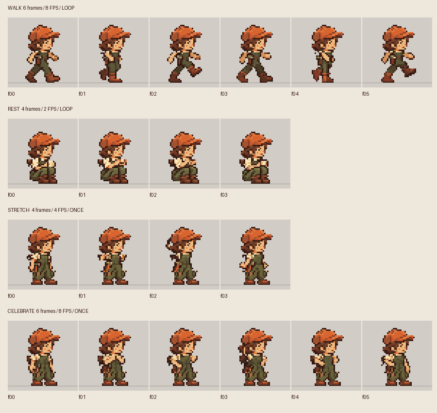

동작 후보 · 사용자 승인 대기
Mina의 남은 네 가지 동작
48×48 · 승인된 공통 32색 · 피벗 (24,44). 중립 및 Idle·Work와 외형을 비교하고, 걷기·휴식의 반복과 스트레칭·축하의 회복 동작을 확인하세요.
전체 20프레임

각 행의 가는 선은 발 접점 y=44입니다. 클립별 자세의 높이는 달라도 셀 피벗은 같습니다.
판정할 항목
- 모자·얼굴·체형이 승인 중립과 같은 인물로 읽히는가?
- Walk의 양쪽 다리가 번갈아 움직이고 반복 경계가 자연스러운가?
- Rest의 찻잔 동작과 앉은 자세가 1×에서도 읽히는가?
- Stretch·Celebrate가 차분하며 마지막 자세로 자연스럽게 회복하는가?
- 밝고 어두운 배경 및 40% 불투명도에서 실루엣이 읽히는가?
아트 후보는 런타임 카탈로그에 배정하지 않았습니다. 발과 Companion 바닥의 기존 간격은 이 페이지에도 그대로 표시합니다.
제작·검사 기록 · 픽셀 검사 결과